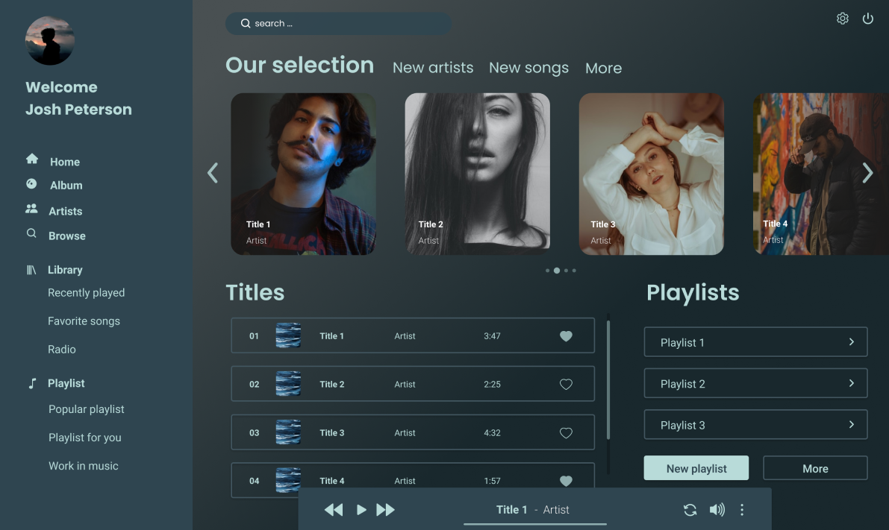

Mon objectif était de créer une plateforme de streaming musical inspirée principalement des géants Spotify et Deezer. Il me fallait reprendre les codes qu’elles utilisent ( le système de like, favoris, recherche, playlist etc..) tout en ajoutant une nouvelle feature. J’ai réalisé ce projet avec Figma. Ce projet était un réel défi pour moi car il y avait de nombreux éléments à faire tenir sur une page sans que ce soit brouillon et incompréhensible de l’utilisateur.

01-Homepage de l’app desktop -